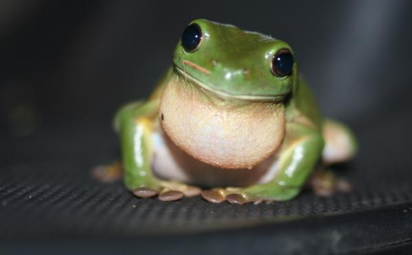

La rana es un anfibio pequeño conocido por su gran capacidad para saltar y por vivir tanto en el agua como en la tierra.
Las ranas viven en ríos, lagos, pantanos y zonas húmedas.
Se alimentan de insectos, gusanos y pequeños animales.